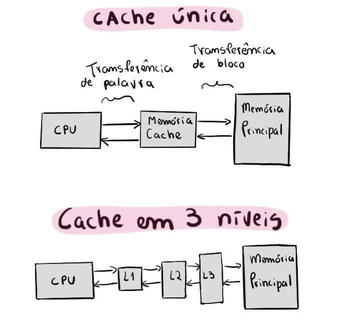
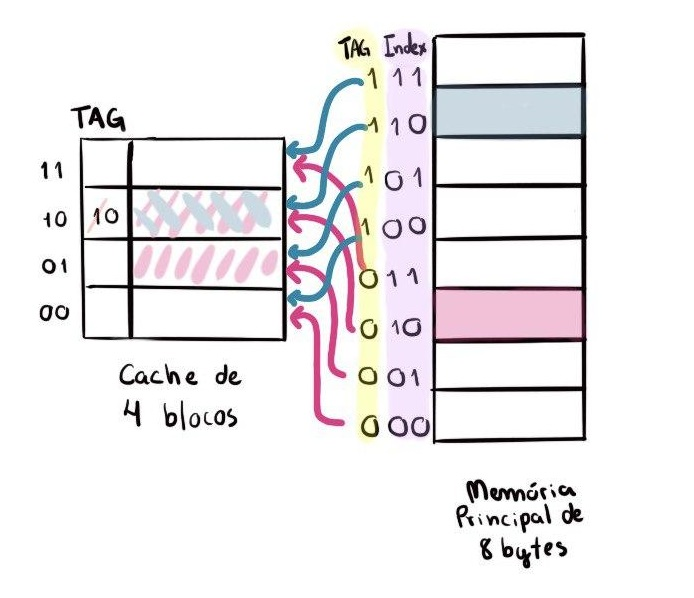
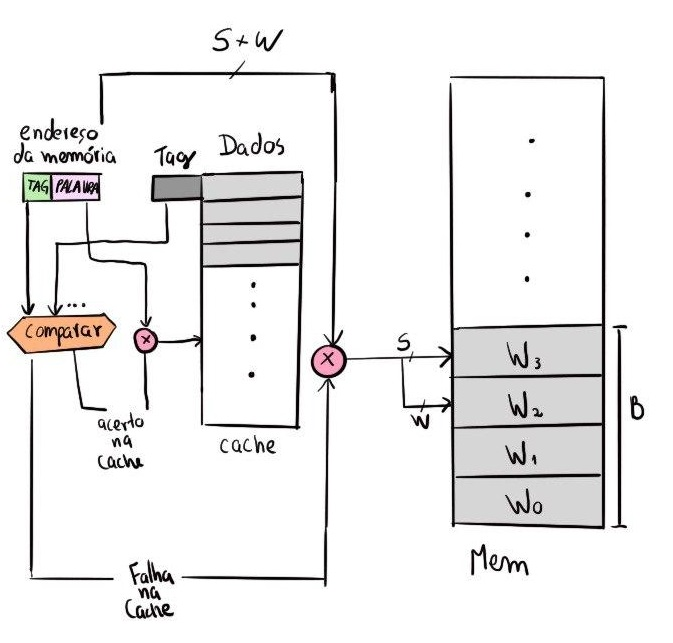
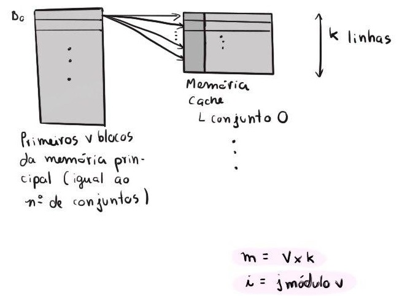

Você sabe como a memória cache funciona?
Para começar a entender memória cache, temos que saber diferenciar os dois tipos de localidades:
Localidades
- Localidade temporal: se um dado da memória foi utilizado uma vez, ele pode ser utilizado novamente em breve. Para entender melhor, pense que você sentou para estudar e trouxe seu caderno à mesa. Se ele está ali e foi utilizado, provavelmente será utilizado outras vezes.
- Localidade espacial: se um dado foi utilizado, existe a chance de algum dado próximo dele ser utilizado também. Pense que durante o estudo, você usou um lápis. É muito provável que também precise utilizar a borracha que estava próxima dele.
Por exemplo, muito programas contém loops. Então, é provável que as instruções e os dados sejam acessados repetidamente, mostrando a localidade temporal. E como as instruções são normalmente acessados sequencialmente, os programas também mostram grande localidade espacial.
Hierarquia de memória
Ok, entendido isso, vamos para hierarquia de memória, e nada melhor do que uma imagem para entendê-la melhor:
- Algumas definições:

Nessa imagem podemos ver que a memória cache é o nível da hierarquia de memória entre o processador e a memória principal.
Essa imagem também nos mostra que a menor unidade de informação que pode aparecer na hierarquia é chamado de bloco ou linha, e ele pode guardar 1 ou mais palavras.
Quando os dados são procurados, se forem encontrados em algum bloco de nível superior, isso é considerado um ACERTO (hit). Caso contrário, será uma FALHA (miss).
A taxa de acertos representa a fração de acertos e é usada como uma medida do desempenho da hierarquia de memória. A taxa de falhas representa a fração de falhas.
Já o tempo de acerto é tempo necessário para acessar um nível da hierarquia de memória e determinar se é um acerto ou uma falha. E a penalidade por falha é o tempo necessário para buscar um bloco de um nível inferior para um nível superior da hierarquia de memória, incluindo o tempo para acessar o bloco, transmiti-lo de um nível para outro e inseri-lo no nível que ocorreu a falha.
Com todos esses conceitos entendidos, vamos partir para a pergunta “Em qual parte da memória cache deve ser colocado o dado da memória principal?”.
Funções de mapeamento
São as funções de mapeamento as responsáveis por levar um bloco da memória principal para a memória cache. Vamos conhecer 3 tipos de funções de mapeamento.
Mapeamento Direto
A maneira mais simples de atribuir um local no cache para cada palavra na memória é se basear no endereço da palavra na memória. Essa estrutura de cache é chamada Mapeamento Direto, pois cada local da memória é mapeado diretamente para exatamente um local no cache. Isso é expresso pela equação:
i = j módulo m
onde i é o número do bloco da memória cache, j é o número do bloco da memória principal e m é o número de blocos na memória cache.
Utilizamos tags (que contém a parte superior do endereço) para saber se o bloco que queremos é aquele mesmo que está na cache.

Os endereços são divididos em campos, sendo eles:
- Byte offset: bits necessários para localizar o byte da palavra, para arquiteturas endereçadas
a byte;
- Word offset: identifica a palavra dentro do bloco quando o bloco possui mais do que uma
palavra;
- Index: resultado da operação do módulo;
- Tag: restante do endereço.
Também precisamos reconhecer se um bloco de cache possui uma informação válida.
Por exemplo, quando um processador é iniciado, o cache não possui bons dados e os campos de tag não terão sentido. Mesmo depois de executar muitas instruções, algumas das entradas de cache ainda podem estar vazias. Então, precisamos saber se a tag deve ser ignorada para essas entradas. E para isso temos um bit de validade que indica se uma entrada contém um endereço válido (Assume 1 - válida ou 0 - não válida).
Apesar de ter suas vantagens, como ter baixo custo e simplicidade, por cada bloco ter uma posição fixa na memória cache, pode haver referência a blocos distintos mapeados na mesma linha, causando o problema de que os blocos podem ser trocados várias vezes e a taxa de acertos pode cair muito.
Mapeamento Associativo
Então temos o mapeamento associativo, que nos ajuda com isso! Porque nele, um bloco da memória principal pode ser carregado em qualquer bloco da memória cache. Portanto, não temos mais o campo de index. A tag é a encarregada por identificar um bloco da memória de maneira única. Para isso, utiliza uma lógica de controle que compara de forma simultânea a tag do endereço do bloco acessado com a tag de todos os blocos da cache.

Como a imagem nos mostra, há uma complexidade do conjunto de circuitos necessários para a comparação das tags em paralelo.
Mapeamento Associativo por Conjunto
Então temos essa terceira função de mapeamento que tenta diminuir as desvantagens dos outros. Ela tenta unir o mapeamento direto com o totalmente associativo.
Ela divide a memória cache em V conjuntos ou sets de K blocos cada.

Na memória cache, o endereço é constituído dos campos: tag, conjunto, byte offset e palavra.
Utilizando uma função de mapeamento direto, saberemos a qual conjunto aquele endereço deve pertencer.
Dentro do conjunto, temos um mapeamento totalmente associativo, ou seja, podemos colocar em qualquer bloco/linha daquele conjunto.
Fazendo essa combinação, temos uma tag bem menor e ela é comparada apenas com as k tags que pertencem ao mesmo conjunto.
Bits de controle
Outro conceito importante dentro da memória cache são os bits de controles. Um deles já foi explicado, o de validade. Agora, falaremos sobre o de modificação.
O bit de modificação indica se os dados que estão armazenados naquele bloco da cache foram modificados ou não. Eles são modificados quando fazemos uma operação de store word.
Algoritmos de substituição
Como a cache tem um tamanho limitado, ela pode ser totalmente ocupada. Nessa situação, se um novo bloco é trazido para ela, existe um conflito e um outro bloco deve sair da cache.
No caso do mapeamento direto, ele mesmo determina o bloco a ser substituído. Já os associativos totalmente e por conjuntos requerem um algoritmo de substituição.
Temos quatro possibilidades de algoritmos: Least Recently Used (substitui pelo menos recentemente utilizado), First In First Out (o primeiro a entrar é o primeiro a sair), Least Frequently Used (substitui pelo menos frequentemente utilizado) e aleatório.
Isso define como nossa cache vai atuar, ou seja, qual política ela mantém.
Política de escrita
Quando precisamos escrever/modificar algum dado na memória principal, temos políticas de escrita que permitem atualizar imediatamente ou não a cache ou a memória principal.
São elas:
-
Mecanismos para write-hit (quando o dado que queremos escrever está na cache)
- Write-through: atualiza a cache e a memória principal;
- Write-back: atualiza a cache e vai atualizar a memória principal só quando a linha for substituída.
-
Mecanismos para write-miss (quando o dado que queremos escrever não está na cache)
- Write allocate: traz o bloco para cache e escreve ela na cache (write-hit);
- No allocate: escreve só na memória principal.